I
Последнее дело · Глава I
Причал у канала

0 / 1 вывод · Прогресс сохраняется
Туман над каналом. Мигает фонарь. В руке — мокрая телеграмма, и по доскам кто-то идёт.
«Одного правильного пути нет. Есть тот, который вы выбрали».
Вас назначили следователем по делу об исчезновении архивариуса Михаила Руднева. Но история начинается не с начала.

Выберите две карточки. Если они подтверждают общий вывод, он появится ниже.
За восемнадцать часов до этого
18 октября · 11:15 · Регистратура архива